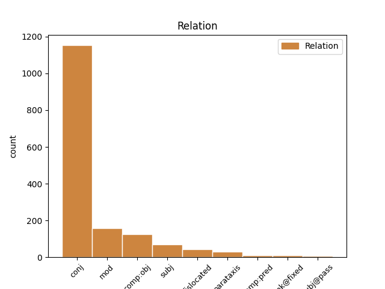
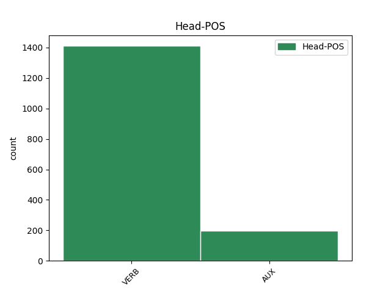

Distribution of features within this leaf


Agreement Rules sorted by frequency.
- When the dependent token is the conjunct(conj) of the head token, and the head token is VERB
1 ꙇ _ _ _ _ 0 _ _ _
2 отъвѣшта отъвѣщати VERB V- Aspect=Perf|Mood=Ind|Number=Sing|Person=3|Tense=Past|VerbForm=Fin|Voice=Act 0 _ _ _
3 тома _ _ _ _ 0 _ _ _
4 и _ _ _ _ 0 _ _ _
5 рече рещи VERB V- Aspect=Perf|Mood=Ind|Number=Sing|Person=3|Tense=Past|VerbForm=Fin|Voice=Act 2 conj _ ref=JOHN_20.28
6 емоу _ _ _ _ 0 _ _ _
1 ѣкоже _ _ _ _ 0 _ _ _
2 посъла посълати VERB V- Aspect=Perf|Mood=Ind|Number=Sing|Person=3|Tense=Past|VerbForm=Fin|Voice=Act 7 mod _ ref=JOHN_20.21
3 мѧ _ _ _ _ 0 _ _ _
4 отъцъ _ _ _ _ 0 _ _ _
5 и _ _ _ _ 0 _ _ _
6 азъ _ _ _ _ 0 _ _ _
7 сълѫ сълати VERB V- Mood=Ind|Number=Sing|Person=1|Tense=Pres|VerbForm=Fin|Voice=Act 0 _ _ _
8 вꙑ _ _ _ _ 0 _ _ _
1 азъ _ _ _ _ 0 _ _ _
2 есмъ бꙑти AUX V- Mood=Ind|Number=Sing|Person=1|Tense=Pres|VerbForm=Fin|Voice=Act 0 _ _ _
3 лоза _ _ _ _ 0 _ _ _
4 истинънаѣ _ _ _ _ 0 _ _ _
5 ꙇ _ _ _ _ 0 _ _ _
6 о҃тцъ _ _ _ _ 0 _ _ _
7 мои _ _ _ _ 0 _ _ _
8 дѣлатель _ _ _ _ 0 _ _ _
9 естъ бꙑти AUX V- Mood=Ind|Number=Sing|Person=3|Tense=Pres|VerbForm=Fin|Voice=Act 2 conj _ ref=JOHN_15.1
1 вьзѧсѧ _ _ _ _ 0 _ _ _
2 г҃а _ _ _ _ 0 _ _ _
3 моего _ _ _ _ 0 _ _ _
4 ꙇ _ _ _ _ 0 _ _ _
5 не _ _ _ _ 0 _ _ _
6 вѣмь вѣдѣти VERB V- Mood=Ind|Number=Sing|Person=1|Tense=Pres|VerbForm=Fin|Voice=Act 0 _ _ _
7 кьде _ _ _ _ 0 _ _ _
8 положишѧ положити VERB V- Aspect=Perf|Mood=Ind|Number=Plur|Person=3|Tense=Past|VerbForm=Fin|Voice=Act 6 comp:obj _ ref=JOHN_20.13
9 и _ _ _ _ 0 _ _ _
1 ꙇже _ _ _ _ 0 _ _ _
2 бѫдетъ бꙑти AUX V- Mood=Ind|Number=Sing|Person=3|Tense=Fut|VerbForm=Fin|Voice=Act 9 subj _ ref=JOHN_15.5
3 въ _ _ _ _ 0 _ _ _
4 мьнѣ _ _ _ _ 0 _ _ _
5 и _ _ _ _ 0 _ _ _
6 азъ _ _ _ _ 0 _ _ _
7 въ _ _ _ _ 0 _ _ _
8 немь _ _ _ _ 0 _ _ _
9 сътворитъ сътворити VERB V- Mood=Ind|Number=Sing|Person=3|Tense=Pres|VerbForm=Fin|Voice=Act 0 _ _ _
10 плодъ _ _ _ _ 0 _ _ _
11 мъногъ _ _ _ _ 0 _ _ _
12 ѣко _ _ _ _ 0 _ _ _
13 без _ _ _ _ 0 _ _ _
14 мене _ _ _ _ 0 _ _ _
15 не _ _ _ _ 0 _ _ _
16 можете _ _ _ _ 0 _ _ _
17 творити _ _ _ _ 0 _ _ _
18 ничесоже _ _ _ _ 0 _ _ _
1 Тома _ _ _ _ 0 _ _ _
2 же _ _ _ _ 0 _ _ _
3 единъ _ _ _ _ 0 _ _ _
4 отъ _ _ _ _ 0 _ _ _
5 обою _ _ _ _ 0 _ _ _
6 на _ _ _ _ 0 _ _ _
7 десѧте _ _ _ _ 0 _ _ _
8 нарицаемꙑ _ _ _ _ 0 _ _ _
9 близнецъ _ _ _ _ 0 _ _ _
10 не _ _ _ _ 0 _ _ _
11 бѣ бꙑти AUX V- Aspect=Imp|Mood=Ind|Number=Sing|Person=3|Tense=Past|VerbForm=Fin|Voice=Act 0 _ _ _
12 тоу _ _ _ _ 0 _ _ _
13 съ _ _ _ _ 0 _ _ _
14 ними _ _ _ _ 0 _ _ _
15 егда _ _ _ _ 0 _ _ _
16 приде прити VERB V- Aspect=Perf|Mood=Ind|Number=Sing|Person=3|Tense=Past|VerbForm=Fin|Voice=Act 11 mod _ ref=JOHN_20.24
17 и҃с _ _ _ _ 0 _ _ _
1 ꙇмъже _ _ _ _ 0 _ _ _
2 отъпоустите отъпоустити VERB V- Mood=Ind|Number=Plur|Person=2|Tense=Pres|VerbForm=Fin|Voice=Act 4 dislocated _ ref=JOHN_20.23
3 грѣхꙑ _ _ _ _ 0 _ _ _
4 отъпоустѧтъ отъпоустити VERB V- Mood=Ind|Number=Plur|Person=3|Tense=Pres|VerbForm=Fin|Voice=Act 0 _ _ _
5 сѧ _ _ _ _ 0 _ _ _
6 имъ _ _ _ _ 0 _ _ _
1 ꙇ _ _ _ _ 0 _ _ _
2 бꙑстъ бꙑти AUX V- Aspect=Perf|Mood=Ind|Number=Sing|Person=3|Tense=Past|VerbForm=Fin|Voice=Act 0 _ _ _
3 егда _ _ _ _ 0 _ _ _
4 благословѣше _ _ _ _ 0 _ _ _
5 ѩ _ _ _ _ 0 _ _ _
6 отъстѫпи отъстѫпити VERB V- Aspect=Perf|Mood=Ind|Number=Sing|Person=3|Tense=Past|VerbForm=Fin|Voice=Act 2 comp:obj _ ref=LUKE_24.51
7 отъ _ _ _ _ 0 _ _ _
8 нихъ _ _ _ _ 0 _ _ _
9 ꙇ _ _ _ _ 0 _ _ _
10 възношааше _ _ _ _ 0 _ _ _
11 сѧ _ _ _ _ 0 _ _ _
12 на _ _ _ _ 0 _ _ _
13 небо _ _ _ _ 0 _ _ _
1 жено _ _ _ _ 0 _ _ _
2 кьде _ _ _ _ 0 _ _ _
3 сѫтъ бꙑти AUX V- Mood=Ind|Number=Plur|Person=3|Tense=Pres|VerbForm=Fin|Voice=Act 0 _ _ _
4 иже _ _ _ _ 0 _ _ _
5 на _ _ _ _ 0 _ _ _
6 тѧ _ _ _ _ 0 _ _ _
7 важдахѫ вадити VERB V- Aspect=Imp|Mood=Ind|Number=Plur|Person=3|Tense=Past|VerbForm=Fin|Voice=Act 3 subj _ ref=JOHN_8.10
1 вѣроуѩи _ _ _ _ 0 _ _ _
2 вь _ _ _ _ 0 _ _ _
3 мѧ _ _ _ _ 0 _ _ _
4 ѣкоже _ _ _ _ 0 _ _ _
5 кънигꙑ _ _ _ _ 0 _ _ _
6 рѣшѧ рещи VERB V- Aspect=Perf|Mood=Ind|Number=Plur|Person=3|Tense=Past|VerbForm=Fin|Voice=Act 11 parataxis _ ref=JOHN_7.38
7 рѣкꙑ _ _ _ _ 0 _ _ _
8 отъ _ _ _ _ 0 _ _ _
9 чрѣва _ _ _ _ 0 _ _ _
10 его _ _ _ _ 0 _ _ _
11 истекѫтъ истещи VERB V- Mood=Ind|Number=Plur|Person=3|Tense=Pres|VerbForm=Fin|Voice=Act 0 _ _ _
12 водꙑ _ _ _ _ 0 _ _ _
13 живꙑ _ _ _ _ 0 _ _ _
1 надъ _ _ _ _ 0 _ _ _
2 ньже _ _ _ _ 0 _ _ _
3 оузьриши оузьрѣти VERB V- Mood=Ind|Number=Sing|Person=2|Tense=Pres|VerbForm=Fin|Voice=Act 11 dislocated _ ref=JOHN_1.33
4 д҃хъ _ _ _ _ 0 _ _ _
5 съходѧштъ _ _ _ _ 0 _ _ _
6 ꙇ _ _ _ _ 0 _ _ _
7 прѣбꙑваѭштъ _ _ _ _ 0 _ _ _
8 на _ _ _ _ 0 _ _ _
9 немь _ _ _ _ 0 _ _ _
10 сь _ _ _ _ 0 _ _ _
11 есть бꙑти AUX V- Mood=Ind|Number=Sing|Person=3|Tense=Pres|VerbForm=Fin|Voice=Act 0 _ _ _
12 крьстѧи _ _ _ _ 0 _ _ _
13 д҃хмь _ _ _ _ 0 _ _ _
14 с҃тꙑмь _ _ _ _ 0 _ _ _
1 и _ _ _ _ 0 _ _ _
2 ѣште _ _ _ _ 0 _ _ _
3 идѫ _ _ _ _ 0 _ _ _
4 оуготоваѭ _ _ _ _ 0 _ _ _
5 мѣсто _ _ _ _ 0 _ _ _
6 вамъ _ _ _ _ 0 _ _ _
7 пакꙑ _ _ _ _ 0 _ _ _
8 придѫ _ _ _ _ 0 _ _ _
9 и _ _ _ _ 0 _ _ _
10 поимѫ _ _ _ _ 0 _ _ _
11 вꙑ _ _ _ _ 0 _ _ _
12 къ _ _ _ _ 0 _ _ _
13 себѣ _ _ _ _ 0 _ _ _
14 да _ _ _ _ 0 _ _ _
15 идеже _ _ _ _ 0 _ _ _
16 есмъ бꙑти AUX V- Mood=Ind|Number=Sing|Person=1|Tense=Pres|VerbForm=Fin|Voice=Act 20 comp:pred _ ref=JOHN_14.3
17 азъ _ _ _ _ 0 _ _ _
18 и _ _ _ _ 0 _ _ _
19 вꙑ _ _ _ _ 0 _ _ _
20 бѫдете бꙑти AUX V- Mood=Ind|Number=Plur|Person=2|Tense=Fut|VerbForm=Fin|Voice=Act 0 _ _ _
1 о҃тче _ _ _ _ 0 _ _ _
2 аще _ _ _ _ 0 _ _ _
3 волиши _ _ _ _ 0 _ _ _
4 мімо мимонести VERB V- Mood=Imp|Number=Sing|Person=2|Tense=Pres|VerbForm=Fin|Voice=Act 0 _ _ _
5 неси неси VERB V- Mood=Imp|Number=Sing|Person=2|Tense=Pres|VerbForm=Fin|Voice=Act 4 unk@fixed _ ref=LUKE_22.42
6 чашѫ _ _ _ _ 0 _ _ _
7 сиѭ _ _ _ _ 0 _ _ _
8 отъ _ _ _ _ 0 _ _ _
9 мене _ _ _ _ 0 _ _ _
1 ꙇ _ _ _ _ 0 _ _ _
2 иже _ _ _ _ 0 _ _ _
3 вѣрѫ _ _ _ _ 0 _ _ _
4 иметъ _ _ _ _ 0 _ _ _
5 и _ _ _ _ 0 _ _ _
6 кръститъ _ _ _ _ 0 _ _ _
7 сѧ _ _ _ _ 0 _ _ _
8 съпасенъ _ _ _ _ 0 _ _ _
9 бѫдетъ _ _ _ _ 0 _ _ _
10 а _ _ _ _ 0 _ _ _
11 иже _ _ _ _ 0 _ _ _
12 не _ _ _ _ 0 _ _ _
13 иметъ ѩти VERB V- Mood=Ind|Number=Sing|Person=3|Tense=Pres|VerbForm=Fin|Voice=Act 16 subj@pass _ ref=MARK_16.16
14 вѣрꙑ _ _ _ _ 0 _ _ _
15 осѫжденъ _ _ _ _ 0 _ _ _
16 бѫдетъ бꙑти AUX V- Mood=Ind|Number=Sing|Person=3|Tense=Fut|VerbForm=Fin|Voice=Act 0 _ _ _
1 что _ _ _ _ 0 _ _ _
2 естъ бꙑти AUX V- Mood=Ind|Number=Sing|Person=3|Tense=Pres|VerbForm=Fin|Voice=Act 0 _ _ _
3 оудобѣе _ _ _ _ 0 _ _ _
4 решти _ _ _ _ 0 _ _ _
5 ослабленоумоу _ _ _ _ 0 _ _ _
6 отъпоуштаѭтъ отъпоущати VERB V- Mood=Ind|Number=Plur|Person=3|Tense=Pres|VerbForm=Fin|Voice=Act 2 parataxis _ ref=MARK_2.9
7 ти _ _ _ _ 0 _ _ _
8 сѧ _ _ _ _ 0 _ _ _
9 грѣси _ _ _ _ 0 _ _ _
10 ли _ _ _ _ 0 _ _ _
11 решти _ _ _ _ 0 _ _ _
12 въстани _ _ _ _ 0 _ _ _
13 и _ _ _ _ 0 _ _ _
14 вьзъми _ _ _ _ 0 _ _ _
15 одръ _ _ _ _ 0 _ _ _
16 твои _ _ _ _ 0 _ _ _
17 и _ _ _ _ 0 _ _ _
18 ходи _ _ _ _ 0 _ _ _
1 шьдъша _ _ _ _ 0 _ _ _
2 же _ _ _ _ 0 _ _ _
3 обрѣтете обрѣсти VERB V- Aspect=Perf|Mood=Ind|Number=Dual|Person=3|Tense=Past|VerbForm=Fin|Voice=Act 0 _ _ _
4 ѣкоже _ _ _ _ 0 _ _ _
5 рече рещи VERB V- Aspect=Perf|Mood=Ind|Number=Sing|Person=3|Tense=Past|VerbForm=Fin|Voice=Act 3 comp:pred _ ref=LUKE_22.13
6 има _ _ _ _ 0 _ _ _
7 ꙇ _ _ _ _ 0 _ _ _
8 оуготовасте _ _ _ _ 0 _ _ _
9 пасха _ _ _ _ 0 _ _ _
Disagree Examples:
1 шедъше _ _ _ _ 0 _ _ _
2 же _ _ _ _ 0 _ _ _
3 наоучите наоучити VERB V- Mood=Imp|Number=Plur|Person=2|Tense=Pres|VerbForm=Fin|Voice=Act 0 _ _ _
4 сѧ _ _ _ _ 0 _ _ _
5 что _ _ _ _ 0 _ _ _
6 естъ бꙑти AUX V- Mood=Ind|Number=Sing|Person=3|Tense=Pres|VerbForm=Fin|Voice=Act 3 comp:obj _ ref=MATT_9.13
1 дъшти _ _ _ _ 0 _ _ _
2 моѣ _ _ _ _ 0 _ _ _
3 нꙑнѣ _ _ _ _ 0 _ _ _
4 оумьрѣтъ оумрѣти VERB V- Aspect=Perf|Mood=Ind|Number=Sing|Person=3|Tense=Past|VerbForm=Fin|Voice=Act 0 _ _ _
5 нъ _ _ _ _ 0 _ _ _
6 пришедъ _ _ _ _ 0 _ _ _
7 нꙑнѣ _ _ _ _ 0 _ _ _
8 възложи възложити VERB V- Mood=Imp|Number=Sing|Person=2|Tense=Pres|VerbForm=Fin|Voice=Act 4 conj _ ref=MATT_9.18
9 на _ _ _ _ 0 _ _ _
10 нѭ _ _ _ _ 0 _ _ _
11 рѫкѫ _ _ _ _ 0 _ _ _
12 твоѭ _ _ _ _ 0 _ _ _
13 и _ _ _ _ 0 _ _ _
14 оживетъ _ _ _ _ 0 _ _ _
1 дъшти _ _ _ _ 0 _ _ _
2 моѣ _ _ _ _ 0 _ _ _
3 нꙑнѣ _ _ _ _ 0 _ _ _
4 оумьрѣтъ _ _ _ _ 0 _ _ _
5 нъ _ _ _ _ 0 _ _ _
6 пришедъ _ _ _ _ 0 _ _ _
7 нꙑнѣ _ _ _ _ 0 _ _ _
8 възложи възложити VERB V- Mood=Imp|Number=Sing|Person=2|Tense=Pres|VerbForm=Fin|Voice=Act 0 _ _ _
9 на _ _ _ _ 0 _ _ _
10 нѭ _ _ _ _ 0 _ _ _
11 рѫкѫ _ _ _ _ 0 _ _ _
12 твоѭ _ _ _ _ 0 _ _ _
13 и _ _ _ _ 0 _ _ _
14 оживетъ ожити VERB V- Mood=Ind|Number=Sing|Person=3|Tense=Pres|VerbForm=Fin|Voice=Act 8 conj _ ref=MATT_9.18
1 Въ _ _ _ _ 0 _ _ _
2 ньже _ _ _ _ 0 _ _ _
3 колижъдо _ _ _ _ 0 _ _ _
4 градъ _ _ _ _ 0 _ _ _
5 ли _ _ _ _ 0 _ _ _
6 вь _ _ _ _ 0 _ _ _
7 весь _ _ _ _ 0 _ _ _
8 вьнидете вънити VERB V- Aspect=Perf|Mood=Ind|Number=Plur|Person=2|Tense=Past|VerbForm=Fin|Voice=Act 9 mod _ ref=MATT_10.11
9 ꙇспꙑтаите испꙑтати VERB V- Mood=Imp|Number=Plur|Person=2|Tense=Pres|VerbForm=Fin|Voice=Act 0 _ _ _
10 кто _ _ _ _ 0 _ _ _
11 вь _ _ _ _ 0 _ _ _
12 немь _ _ _ _ 0 _ _ _
13 достоинъ _ _ _ _ 0 _ _ _
14 естъ _ _ _ _ 0 _ _ _
1 Въ _ _ _ _ 0 _ _ _
2 ньже _ _ _ _ 0 _ _ _
3 колижъдо _ _ _ _ 0 _ _ _
4 градъ _ _ _ _ 0 _ _ _
5 ли _ _ _ _ 0 _ _ _
6 вь _ _ _ _ 0 _ _ _
7 весь _ _ _ _ 0 _ _ _
8 вьнидете _ _ _ _ 0 _ _ _
9 ꙇспꙑтаите испꙑтати VERB V- Mood=Imp|Number=Plur|Person=2|Tense=Pres|VerbForm=Fin|Voice=Act 0 _ _ _
10 кто _ _ _ _ 0 _ _ _
11 вь _ _ _ _ 0 _ _ _
12 немь _ _ _ _ 0 _ _ _
13 достоинъ _ _ _ _ 0 _ _ _
14 естъ бꙑти AUX V- Mood=Ind|Number=Sing|Person=3|Tense=Pres|VerbForm=Fin|Voice=Act 9 comp:obj _ ref=MATT_10.11